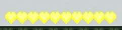
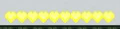

RGB Hearts

RGB Hearts is a must-have mod for Minecraft enthusiasts who love to customize their gaming experience. With this mod, players have the power to choose the color of their hotbar from a wide range of vibrant hues. The mod is easy to use and allows for endless customization options, allowing players to express their unique style and personality in the game. Whether you prefer a classic red, a soothing blue, or a bold neon green, RGB Hearts has got you covered. Say goodbye to boring hotbars and hello to a world of color with RGB Hearts.

RGB Hearts is a versatile and user-friendly Minecraft mod that offers a variety of exciting features. Firstly, it allows players to change the color of their hotbar to any color they desire, making their gaming experience more visually appealing and personal. The mod also includes a preview option, allowing players to preview their hotbar color before making a final decision. Whether you're a seasoned Minecraft player or a newcomer to the game, RGB Hearts is an excellent choice for anyone looking to add a touch of personality to their gameplay.


 
 
This mod will work on any device that can run Minecraft Bedrock Edition and install mods.
This mod will be compatible with any mod that does not change the heart textures.

How do I change the color?
When the pack is activated, there should be a settings icon when you click on it.

Why won't the colors change?
Try restarting your game. If this still doesn't work, turn the mod off and back on.
Why does the mod fail to import?
Try changing the file extension to zip, then uncompress it and put it in your resource_packs folder. This may work however is not recommended and should only be used as a final option.
Is there a rainbow option?
Currently no, however it may be added in the future.

Changelog
• Added some new colors